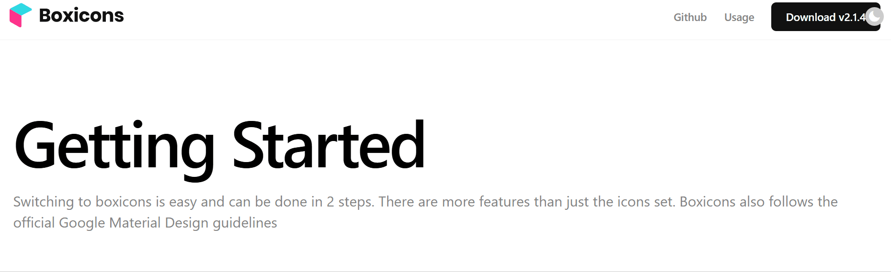
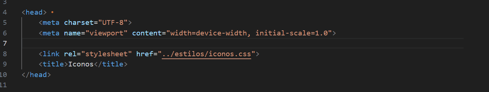
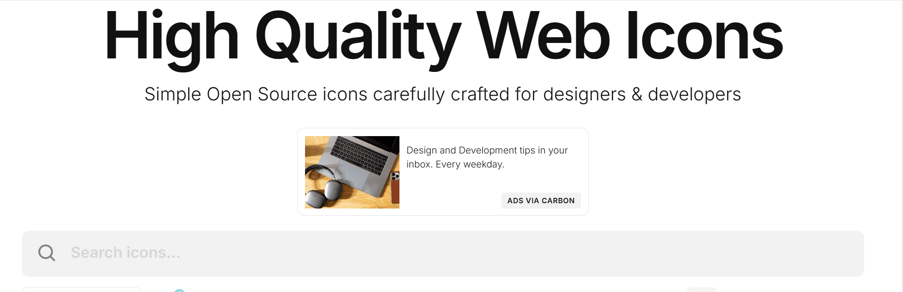
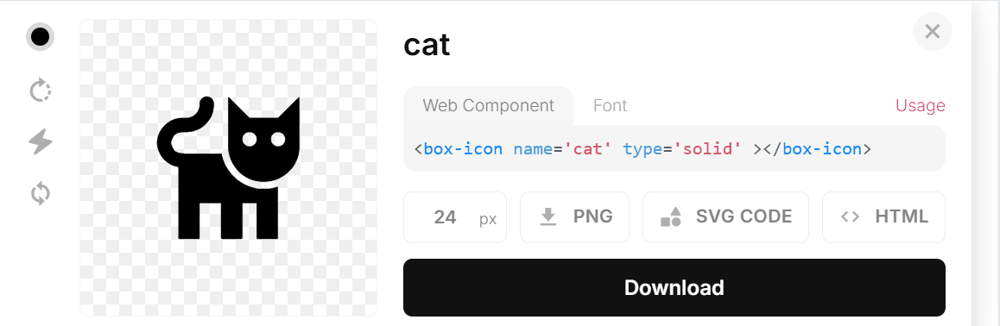
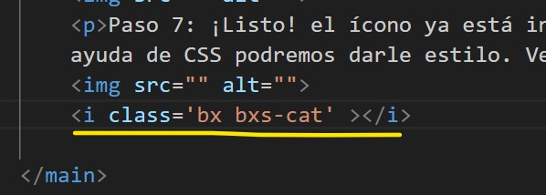
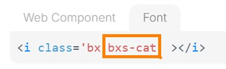
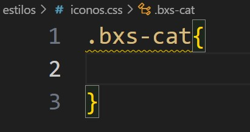
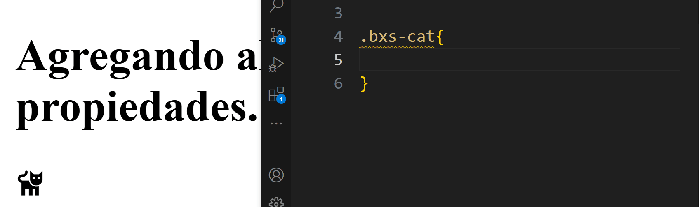
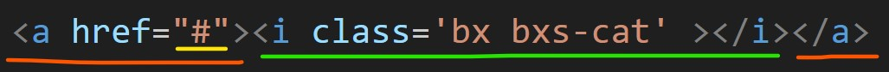

Paso a paso de cómo utilizar iconos de Boxicon
Paso 1: ingresar a Boxicons y hacer clic en Usage o "Uso"
Paso 2: ir hacia el apartado de Usage as a Font > Import the CSS o Uso como fuente Importar el CSS. Copiar el link que nos ofrece el apartado.
Paso 3: pegar el enlace anterior en el head del archivo HTML de nuestro proyecto en donde queremos utilizar los íconos.
Paso 4: en el sitio de Boxicons buscar un íconos que nos interese agregar al sitio. Al seleccionarlo se nos abrirá una caja de opciones.
Paso 5: en la caja de opciones seleccionar la opcion de "Font". Esto nos permitira enlazar incorporar el ícono como un elemento HTML.
Paso 6: pegar el elemento HTML del icono en el proyecto
Paso 7: ¡Listo! el ícono ya está incorporado en el proyecto. Ahora, con ayuda de CSS podremos darle estilo. Para eso es conveniente utilizar la class que ya viene incorporada en el elemento. Copiamos y pegamos ese nombre en el CSS para comenzar a trabajar sobre él. Veamos cómo queda:
 Agregando algunas propiedades.
Por ulitmo, para poder realizar un icono clickeable solo colocamos el elemento del icono dentro de un elemento < a >
